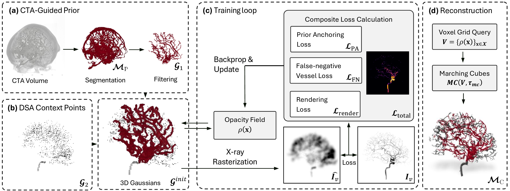
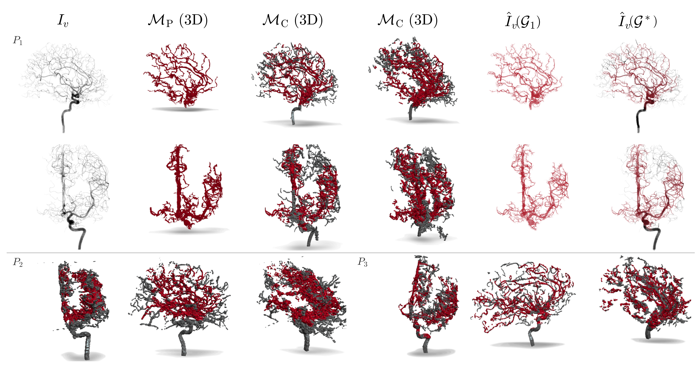
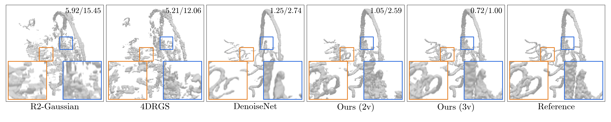
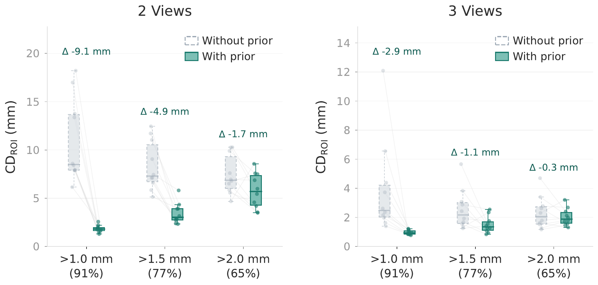

Method Overview

We propose a novel approach to bridge the resolution and dimensionality gap between CTA, which provides 3D vascular geometry but often misses small vessels, and biplanar 2D DSA, which offers higher spatial resolution but lacks 3D structural information, by formulating the problem as a 3D shape completion task. Our method represents vasculature using a set of 3D Gaussians initialized from CTA-derived vessel geometry and augmented with additional spatial and opacity primitives seeded from two DSA projections. These Gaussians jointly encode geometry and attenuation and are optimized to fit the observed DSA images while remaining consistent with the original CTA anatomy. Experiments on synthetic and clinical cerebrovascular data demonstrate improved 3D reconstruction of small vessel branches at submillimetric resolution, validating the use of DSA to complement missing CTA vessel anatomy.
The repository includes the public training and evaluation pipeline together with the static project documentation hosted on this page.



Evaluated on 10 synthetic CTA scans from the TopBrain dataset. Metrics computed on the missing vascular region (ROI) not covered by the CTA prior. Lower is better.
| Method | AP, LAT (2-view) | AP, LAT, Oblique (3-view) | ||
|---|---|---|---|---|
| CDROI (mm) | HDROI (mm) | CDROI (mm) | HDROI (mm) | |
| DenoiseNet | 2.30 ± 0.48 | 6.30 ± 1.82 | — | — |
| R2-Gaussian | 8.78 ± 1.97 | 24.70 ± 10.75 | 4.87 ± 1.93 | 18.71 ± 10.23 |
| 4DRGS | 8.35 ± 2.57 | 23.40 ± 12.69 | 2.56 ± 1.38 | 8.50 ± 6.85 |
| Ours | 2.10 ± 0.35 | 4.53 ± 0.50 | 0.86 ± 0.11 | 1.68 ± 0.63 |


The M2 context points complement the CTA-derived prior (M1). Residual Intersected FDK initialization provides the strongest signal for recovering missing vessel regions.
| Initialization | AP, LAT (2-view) | AP, LAT, Oblique (3-view) | ||
|---|---|---|---|---|
| CDROI (mm) | HDROI (mm) | CDROI (mm) | HDROI (mm) | |
| No M2 (M1 only) | 3.62 ± 1.30 | 9.49 ± 3.50 | 1.26 ± 0.50 | 2.69 ± 1.69 |
| Uniform | 3.97 ± 1.11 | 10.31 ± 2.62 | 1.37 ± 0.42 | 3.07 ± 2.03 |
| Residual FDK | 2.99 ± 0.66 | 8.46 ± 2.34 | 0.95 ± 0.17 | 1.96 ± 1.21 |
| Res. Intersected FDK | 2.10 ± 0.35 | 4.53 ± 0.50 | 0.86 ± 0.11 | 1.68 ± 0.63 |